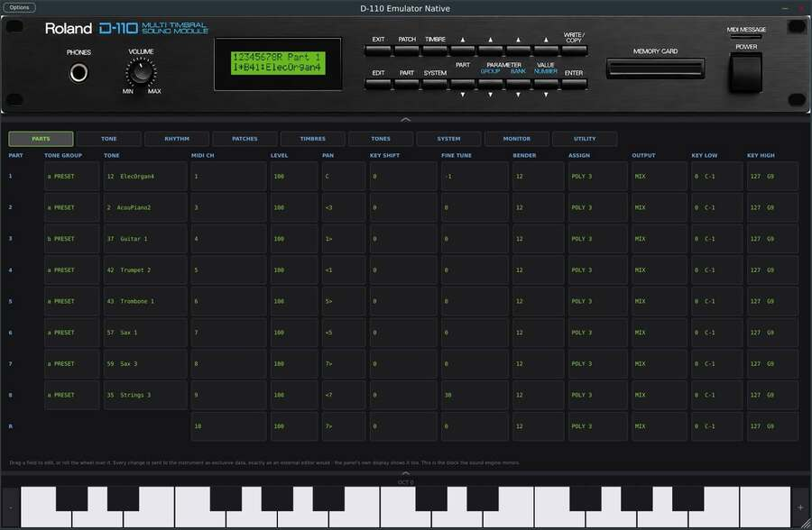

Di-111 synth
A VST3 plugin that emulates the Roland D-110 multitimbral sound module. Runs the real Roland firmware - menus, display, patch/timbre editors, all sixteen front-panel buttons - against an emulated LA32 engine (munt). Requires your own Roland ROM dumps (not included, copyrighted).

github.com/luginf/Di-111-synth
MIDI banks for Casio CDP-S350 / CDP-S360
The complete 700-voice list (18 categories) of the Casio CDP-S350/CDP-S360,
converted from MusE's proprietary format (.idf) to MIDNAM, the
near-universal XML format for exchanging MIDI instrument definitions.
Ready to use as-is in Ardour, Mixbus, Logic Pro and Pro Tools.
Download: .midnam (Ardour, Mixbus, Logic Pro, Pro Tools) - .middev (Logic Pro, Pro Tools) - .idf (MusE, source) - conversion script